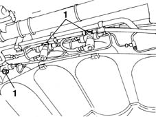
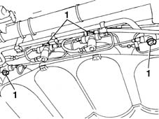
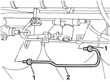
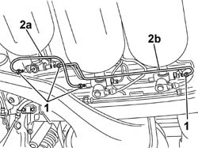

1042A50 PIPE (1) CONNECTING CNG RECHARGING SYSTEM SOLENOIDS - R R
- Path
- Procedures > 10 ENGINE UNIT > 1042 METHANE GAS CANNISTER AND TUBES > 1042A METHANE GAS CANNISTER AND TUBES FOR RE-CHARGING > 1042A50 PIPE (1) CONNECTING CNG RECHARGING SYSTEM SOLENOIDS - R R
- Kind
- repair procedure (removal / refitting; the operation number is the code)
- Applies to
- engines: 1.6 16v; all production periods; only with equipment: BIPOWER and BLUPOWER
- Interactive page
- https://sloeber94.github.io/elrnDB-fMltpl/en/#/2891469
Applies to: engines: 1.6 16v; production: fino a 05/04; only with equipment: BIPOWER and BLUPOWER
 Removing
Removing
 Refitting
RefittingPlace the car on a ramp.
Disconnect the battery negative terminal.
Raise the ramp.
Applies to: engines: 1.6 16v; production: fino a 05/04; only with equipment: BIPOWER and BLUPOWER
1. Before working on the pipe, close the CNG manual cut out valves to prevent the escape of gas during the dismantling operations.

Applies to: engines: 1.6 16v; production: fino a 05/04; only with equipment: BIPOWER and BLUPOWER
1. Before working on the pipe, close the CNG manual cut out valves to prevent the escape of gas during the dismantling operations.

Applies to: engines: 1.6 16v; production: fino a 05/04; only with equipment: BIPOWER and BLUPOWER
1. Undo the connectors (1a) from the valve assemblies.
2. Remove the connecting and repressurizing pipe.

Applies to: engines: 1.6 16v; production: fino a 05/04; only with equipment: BIPOWER and BLUPOWER
Refitting
RemovingFit the pipe on the two valves.
Tighten the two connectors for the pipe.
Screw in and then tighten the bolts fixing the shield to the bodyshell.
 | Fastening | Component | Ø | Value (daNm) |
|---|---|---|---|---|
- | - | CNG REPRESSURIZING PIPE CONNECTORS | M10 | 2.5 |
Open the CNG manual cut out valves.
Remove the vehicle from the ramp.
Applies to: engines: 1.6 16v; production: da 06/04; only with equipment: BIPOWER
Removing
RefittingPosition the vehicle on a lift.
Proceed with draining the high pressure circuit following the instructions in the specific operation
Op. 1042A02 C.N.G. - FUEL SYSTEM SAFETY CHECK
Raise the lift.
Applies to: engines: 1.6 16v; production: da 06/04; only with equipment: BIPOWER
1. Undo the connectors from the valve assemblies.
2. Remove the connecting and repressurizing pipe (2a) or (2b).

Applies to: engines: 1.6 16v; production: da 06/04; only with equipment: BIPOWER
Refitting
RemovingCheck the condition of the solenoid valve connecting pipe removed.
Fit the pipe on the two valves.
Tighten the two pipe connectors.
Fastening | Component | Ø | Value (daNm) | |
|---|---|---|---|---|
- | - | CNG RECHARGING PIPE CONNECTION | M10 | 2.5 |
Move the CNG cut-off solenoids to open position by hand and check system is efficient.
Op. 1042A06 C.N.G. - FUEL SYSTEM CHECK FOR ANY LEAKS USING ELECTRONIC DETECTOR FOLLOWING OPERATIONS
Remove the vehicle from the lift.